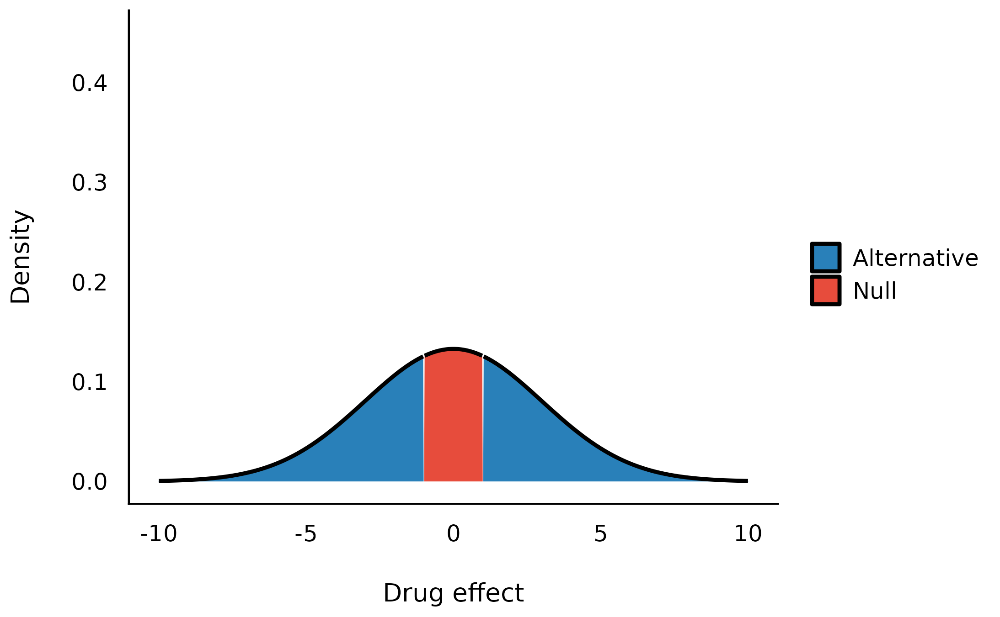
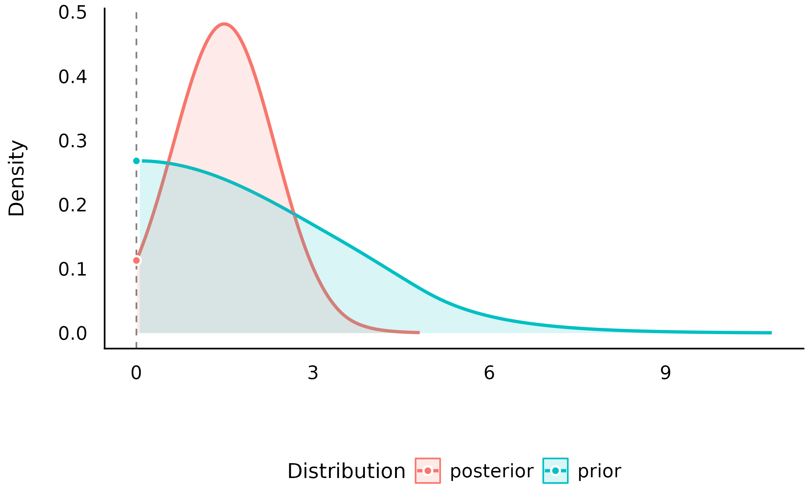
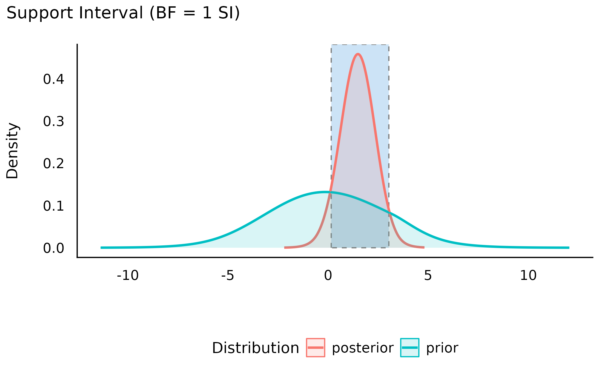
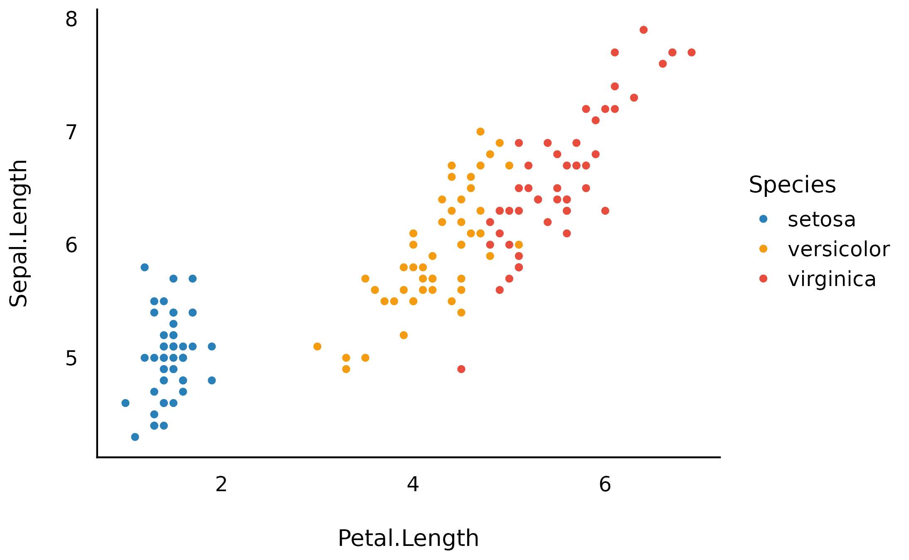

This vignette can be referred to by citing the following:
Makowski, D., Ben-Shachar, M. S., & Lüdecke, D. (2019). bayestestR: Describing Effects and their Uncertainty, Existence and Significance within the Bayesian Framework. Journal of Open Source Software, 4(40), 1541. https://doi.org/10.21105/joss.01541
Makowski, D., Ben-Shachar, M. S., Chen, S. H. A., & Lüdecke, D. (2019). Indices of Effect Existence and Significance in the Bayesian Framework. Retrieved from 10.3389/fpsyg.2019.02767
The adoption of the Bayesian framework for applied statistics, especially in the social and psychological sciences, seems to be developing in two distinct directions. One of the key topics marking their separation is their opinion about the Bayes factor. In short, one school of thought (e.g., the Amsterdam school, led by E. J. Wagenmakers) advocate its use, and emphasize its qualities as a statistical index, while another point to its limits and prefer, instead, the precise description of posterior distributions (using CIs, ROPEs, etc.).
The bayestestR package does not take a
side in this debate, and offers tools to carry out analysis irrespective
of the school you subscribe to. Instead, it strongly supports the notion
of an informed choice:
discover the methods, learn about them, understand them, try them, and decide for yourself.
Having said that, here’s an introduction to Bayes factors :)
The Bayes Factor
Bayes Factors (BFs) are indices of relative evidence of one “model” over another.
In their role as a hypothesis testing index, they are to Bayesian framework what a \(p\)-value is to the classical/frequentist framework. In significance-based testing, \(p\)-values are used to assess how unlikely are the observed data if the null hypothesis were true, while in the Bayesian model selection framework, Bayes factors assess evidence for different models, each model corresponding to a specific hypothesis.
According to Bayes’ theorem, we can update prior probabilities of some model \(M\) (\(P(M)\)) to posterior probabilities (\(P(M|D)\)) after observing some datum \(D\) by accounting for the probability of observing that datum given the model (\(P(D|M)\), also known as the likelihood):
\[ P(M|D) = \frac{P(D|M)\times P(M)}{P(D)} \]
Using this equation, we can compare the probability-odds of two models:
\[ \underbrace{\frac{P(M_1|D)}{P(M_2|D)}}_{\text{Posterior Odds}} = \underbrace{\frac{P(D|M_1)}{P(D|M_2)}}_{\text{Likelihood Ratio}} \times \underbrace{\frac{P(M_1)}{P(M_2)}}_{\text{Prior Odds}} \]
Where the likelihood ratio (the middle term) is the Bayes factor - it is the factor by which some prior odds have been updated after observing the data to posterior odds.
Thus, Bayes factors can be calculated in two ways:
- As a ratio quantifying the relative probability of the observed data under each of the two models. (In some contexts, these probabilities are also called marginal likelihoods.)
\[ BF_{12}=\frac{P(D|M_1)}{P(D|M_2)} \]
- As the degree of shift in prior beliefs about the relative credibility of two models (since they can be computed by dividing posterior odds by prior odds).
\[ BF_{12}=\frac{Posterior~Odds_{12}}{Prior~Odds_{12}} \]
Here we provide functions for computing Bayes factors in two different contexts:
- testing single parameters (coefficients) within a model
- comparing statistical models themselves
Testing Models’ Parameters with Bayes Factors
A Bayes factor for a single parameter can be used to answer the question:
“Given the observed data, has the null hypothesis of an absence of an effect become more or less credible?”

Bayesian analysis of the Students’ (1908) Sleep data set.
Let’s use the Students’ (1908) Sleep data set
(data("sleep")). The data comes from a study in which
participants were administered a drug and the researchers assessed the
extra hours of sleep that participants slept afterwards. We will try
answering the following research question using Bayes factors:
Given the observed data, has the hypothesis that the drug (the effect of
group) has no effect on the numbers of hours of extra sleep (variableextra) become more of less credible?

The boxplot suggests that the second group has a higher number of hours of extra sleep. By how much?
Let’s fit a simple Bayesian
linear model, with a prior of \(b_{group}
\sim N(0, 3)\) (i.e. the prior follows a Gaussian/normal
distribution with \(mean = 0\) and
\(SD = 3\)), using
rstanarm package:
set.seed(123)
library(rstanarm)
model <- stan_glm(
formula = extra ~ group,
data = sleep,
prior = normal(0, 3, autoscale = FALSE),
chains = 10, iter = 5000, warmup = 1000
)Testing against a null-region
One way of operationlizing the null-hypothesis is by setting a null region, such that an effect that falls within this interval would be practically equivalent to the null (Kruschke, 2010). In our case, that means defining a range of effects we would consider equal to the drug having no effect at all. We can then compute the prior probability of the drug’s effect falling outside this null-region, and the prior probability of the drug’s effect falling within the null-region to get our prior odds. Say any effect smaller than an hour of extra sleep is practically equivalent to being no effect at all, we would define our prior odds as:
\[ \frac {P(b_{drug} \notin [-1, 1])} {P(b_{drug} \in [-1, 1])} \]
Given our prior has a normal distribution centered at 0 hours with a scale (an SD) of 3 hours, our priors would look like this:

and the prior odds would be 2.8.
By looking at the posterior distribution, we can now compute the posterior probability of the drug’s effect falling outside the null-region, and the posterior probability of the drug’s effect falling within the null-region to get our posterior odds:
\[ \frac {P(b_{drug} \notin [-1,1] | Data)} {P(b_{drug} \in [-1,1] | Data)} \]

We can see that the center of the posterior distribution has shifted away from 0 (to ~1.5). Likewise, the posterior odds are 2.5, which seems to favor the effect being non-null. But, does this mean the data support the alternative over the null? Hard to say, since even before the data were observed, the priors already favored the alternative - so we need to take our priors into account here!
Let’s compute the Bayes factor as the change from the prior odds to the posterior odds: \(BF_{10} = Odds_{posterior} / Odds_{prior} = 0.9\)! This BF indicates that the data provide 1/0.9 = 1.1 times more evidence for the effect of the drug being practically nothing than it does for the drug having some clinically significant effect. Thus, although the center of distribution has shifted away from 0, and the posterior distribution seems to favor a non-null effect of the drug, it seems that given the observed data, the probability mass has overall shifted closer to the null interval, making the values in the null interval more probable! (see Non-overlapping Hypotheses in Morey & Rouder, 2011)
All of this can be achieved with the function
bayesfactor_parameters(), which computes a Bayes factor for
each of the model’s parameters:
My_first_BF <- bayesfactor_parameters(model, null = c(-1, 1))
My_first_BF> Bayes Factor (Null-Interval)
>
> Parameter | BF
> -------------------
> (Intercept) | 0.098
> group2 | 0.888
>
> * Evidence Against The Null: [-1.000, 1.000]We can also plot using the see package:

Note that interpretation guides for Bayes factors
can be found in the effectsize package:
effectsize::interpret_bf(exp(My_first_BF$log_BF[2]), include_value = TRUE)> [1] "anecdotal evidence (BF = 1/1.13) against"
> (Rules: jeffreys1961)Testing against the point-null (0)
What if we don’t know what region would be practically equivalent to 0?
Or if we just want the null to be exactly zero? Not a problem - as the width of null region shrinks to a point, the change from the prior probability to the posterior probability of the null can be estimated by comparing the density of the null value between the two distributions.1 This ratio is called the Savage-Dickey ratio, and has the added benefit of also being an approximation of a Bayes factor comparing the estimated model against a model in which the parameter of interest has been restricted to a point-null:
“[…] the Bayes factor for \(H_0\) versus \(H_1\) could be obtained by analytically integrating out the model parameter \(\theta\). However, the Bayes factor may likewise be obtained by only considering \(H_1\), and dividing the height of the posterior for \(\theta\) by the height of the prior for \(\theta\), at the point of interest.” (Wagenmakers, Lodewyckx, Kuriyal, & Grasman, 2010)
My_second_BF <- bayesfactor_parameters(model, null = 0)
My_second_BF> Bayes Factor (Savage-Dickey density ratio)
>
> Parameter | BF
> ----------------
> group2 | 1.26
>
> * Evidence Against The Null: 0
plot(My_second_BF)
Directional hypotheses
We can also compute Bayes factors for directional hypotheses (“one sided”), if we have a prior hypotheses about the direction of the effect. This can be done by setting an order restriction on the prior distribution (which results in an order restriction on the posterior distribution) of the alternative (Morey & Wagenmakers, 2014). For example, if we have a prior hypothesis that the drug has a positive effect on the number of sleep hours, the alternative will be restricted to the region to the right of the null (point or interval):
test_group2_right <- bayesfactor_parameters(model, direction = ">")
test_group2_right> Bayes Factor (Savage-Dickey density ratio)
>
> Parameter | BF
> ----------------
> group2 | 2.42
>
> * Evidence Against The Null: 0
> * Direction: Right-Sided test
plot(test_group2_right)
As we can see, given that we have an a priori assumption about the direction of the effect (that the effect is positive), the presence of an effect is 2.8 times more likely than the absence of an effect, given the observed data (or that the data are 2.8 time more probable under \(H_1\) than \(H_0\)). This indicates that, given the observed data, and a priori hypothesis, the posterior mass has shifted away from the null value, giving some evidence against the null (note that a Bayes factor of 2.8 is still considered quite weak evidence).
Thanks to the flexibility of Bayesian framework, it is also possible to compute a Bayes factor for dividing hypotheses - that is, for a null and alternative that are complementary, opposing one-sided hypotheses (Morey & Wagenmakers, 2014).
For example, above we compared an alternative of \(H_A\): the drug has a positive effects to the null \(H_0\): the drug has no effect. But we can also compare instead the same alternative to its complementary hypothesis: \(H_{-A}\): the drug has a negative effects.
test_group2_dividing <- bayesfactor_parameters(model, null = c(-Inf, 0))
test_group2_dividing> Bayes Factor (Null-Interval)
>
> Parameter | BF
> -----------------
> group2 | 20.75
>
> * Evidence Against The Null: [-Inf, 0.000]
plot(test_group2_dividing)
We can see that this test produces even stronger (more conclusive) evidence than the one-sided vs. point-null test! And indeed, as a rule of thumb, the more specific the two hypotheses are, and the more distinct they are from one another, the more power our Bayes factor has! 2
Thanks to the transitivity of Bayes factors, we can also use
bayesfactor_parameters() to compare even more types of
hypotheses, with some trickery. For example:
\[ \underbrace{BF_{0<b<1\text{ vs. }b=0}}_{\text{range vs. point}} = \underbrace{BF_{b<0\text{ vs. }b=0}}_{\text{directional vs. point}} / \underbrace{BF_{b<0\text{ vs. }0<b<1}}_{\text{directional vs. range}} \]
NOTE: See the Testing Contrasts appendix below.
Support intervals
So far we’ve seen that Bayes factors quantify relative support between competing hypotheses. However, we can also ask:
Upon observing the data, the credibility of which of the parameter’s values has increased (or decreased)?
For example, we’ve seen that the point null has become somewhat less credible after observing the data, but we might also ask which values have gained credibility given the observed data?. The resulting range of values is called the support interval as it indicates which values are supported by the data (Wagenmakers, Gronau, Dablander, & Etz, 2018). We can do this by once again comparing the prior and posterior distributions and checking where the posterior densities are higher than the prior densities.
In bayestestR, this can be achieved with the
si() function:
my_first_si <- si(
posterior = data.frame(group2 = posterior),
prior = data.frame(group2 = prior),
BF = 1
)
print(my_first_si)> Support Interval
>
> Parameter | BF = 1 SI
> ------------------------
> group2 | [0.15, 3.04]The argument BF = 1 indicates that we want the interval
to contain values that have gained support by a factor of at least 1
(that is, any support at all).
Visually, we can see that the credibility of all the values within this interval has increased (and likewise the credibility of all the values outside this interval has decreased):
plot(my_first_si)
We can also see the this support interval (just barely) excludes the point null (0) - whose credibility we’ve already seen has decreased by the observed data. This emphasizes the relationship between the support interval and the Bayes factor:
“The interpretation of such intervals would be analogous to how a frequentist confidence interval contains all the parameter values that would not have been rejected if tested at level \(\alpha\). For instance, a BF = 1/3 support interval encloses all values of theta for which the updating factor is not stronger than 3 against.” (Wagenmakers et al., 2018)
Thus, the choice of BF (the level of support the interval should indicate) depends on what we want our interval to represent:
- A \(BF = 1\) contains values whose credibility has merely not decreased by observing the data.
- A \(BF > 1\) contains values who
received more impressive support from the data.
- A \(BF < 1\) contains values whose credibility has not been impressively decreased by observing the data. Testing against values outside this interval will produce a Bayes factor larger than \(1/BF\) in support of the alternative.
Comparing Models using Bayes Factors
Bayes factors can also be used to compare statistical models. In this statistical context, they answer the following question:
Under which model are the observed data more probable?
In other words, which model is more likely to have produced the observed data? This is usually done by comparing the marginal likelihoods of two models. In such a case, the Bayes factor is a measure of the relative evidence for one model over the other.
Let’s use Bayes factors for model comparison to find a model that
best describes the length of an iris’ sepal using the iris
data set.
For Bayesian models (brms and
rstanarm)
Note: In order to compute Bayes factors for Bayesian models, non-default arguments must be added upon fitting:
-
brmsfitmodels must have been fitted withsave_pars = save_pars(all = TRUE) -
stanregmodels must have been fitted with a defineddiagnostic_file.
Let’s first fit 5 Bayesian regressions with brms to
predict Sepal.Length:
library(brms)
# intercept only model
m0 <- brm(Sepal.Length ~ 1,
data = iris,
prior =
set_prior("student_t(3, 6, 6)", class = "Intercept") +
set_prior("student_t(3, 0, 6)", class = "sigma"),
chains = 10, iter = 5000, warmup = 1000,
save_pars = save_pars(all = TRUE)
)
# Petal.Length only
m1 <- brm(Sepal.Length ~ Petal.Length,
data = iris,
prior =
set_prior("student_t(3, 6, 6)", class = "Intercept") +
set_prior("student_t(3, 0, 6)", class = "sigma") +
set_prior("normal(0, 1)", coef = "Petal.Length"),
chains = 10, iter = 5000, warmup = 1000,
save_pars = save_pars(all = TRUE)
)
# Species only
m2 <- brm(Sepal.Length ~ Species,
data = iris,
prior =
set_prior("student_t(3, 6, 6)", class = "Intercept") +
set_prior("student_t(3, 0, 6)", class = "sigma") +
set_prior("normal(0, 3)", coef = c("Speciesversicolor", "Speciesvirginica")),
chains = 10, iter = 5000, warmup = 1000,
save_pars = save_pars(all = TRUE)
)
# Species + Petal.Length model
m3 <- brm(Sepal.Length ~ Species + Petal.Length,
data = iris,
prior =
set_prior("student_t(3, 6, 6)", class = "Intercept") +
set_prior("student_t(3, 0, 6)", class = "sigma") +
set_prior("normal(0, 1)", coef = "Petal.Length") +
set_prior("normal(0, 3)", coef = c("Speciesversicolor", "Speciesvirginica")),
chains = 10, iter = 5000, warmup = 1000,
save_pars = save_pars(all = TRUE)
)
# full interactive model
m4 <- brm(Sepal.Length ~ Species * Petal.Length,
data = iris,
prior =
set_prior("student_t(3, 6, 6)", class = "Intercept") +
set_prior("student_t(3, 0, 6)", class = "sigma") +
set_prior("normal(0, 1)", coef = "Petal.Length") +
set_prior("normal(0, 3)", coef = c("Speciesversicolor", "Speciesvirginica")) +
set_prior("normal(0, 2)", coef = c("Speciesversicolor:Petal.Length", "Speciesvirginica:Petal.Length")),
chains = 10, iter = 5000, warmup = 1000,
save_pars = save_pars(all = TRUE)
)We can now compare these models with the
bayesfactor_models() function, using the
denominator argument to specify the model against which the
rest of the models will be compared (in this case, the intercept-only
model):
library(bayestestR)
comparison <- bayesfactor_models(m1, m2, m3, m4, denominator = m0)
comparison> Bayes Factors for Model Comparison
>
> Model BF
> [1] Petal.Length 1.27e+44
> [2] Species 8.34e+27
> [3] Species + Petal.Length 2.29e+53
> [4] Species * Petal.Length 9.79e+51
>
> * Against Denominator: [5] (Intercept only)
> * Bayes Factor Type: marginal likelihoods (bridgesampling)We can see that the Species + Petal.Length model is the
best model - with \(BF=2\times
10^{53}\) compared to the null (intercept only).
Due to the transitive property of Bayes factors, we can easily change
the reference model to the full Species * Petal.Length
model:
update(comparison, reference = 4)> Bayes Factors for Model Comparison
>
> Model BF
> [1] Petal.Length 1.30e-08
> [2] Species 8.52e-25
> [3] Species + Petal.Length 23.38
> [5] (Intercept only) 1.02e-52
>
> * Against Denominator: [4] Species * Petal.Length
> * Bayes Factor Type: marginal likelihoods (bridgesampling)As we can see, the Species + Petal.Length model is also
favored compared to the Species * Petal.Length model,
though to several orders of magnitude less - is is only supported 23.38
times more!)
We can also change the reference model to the Species
model:
update(comparison, reference = 2)> Bayes Factors for Model Comparison
>
> Model BF
> [1] Petal.Length 1.53e+16
> [3] Species + Petal.Length 2.74e+25
> [4] Species * Petal.Length 1.17e+24
> [5] (Intercept only) 1.20e-28
>
> * Against Denominator: [2] Species
> * Bayes Factor Type: marginal likelihoods (bridgesampling)Notice that, in the Bayesian framework the compared models do
not need to be nested models, as happened here when we compared the
Petal.Length-only model to the Species-only
model (something that cannot be done in the frequentist framework, where
compared models must be nested in one another).
We can also get a matrix of Bayes factors of all the pairwise model comparisons:
as.matrix(comparison)> # Bayes Factors for Model Comparison
>
> Numerator
> Denominator
>
> | [1] | [2] | [3] | [4] | [5]
> ---------------------------------------------------------------------------------
> [1] Petal.Length | 1 | 6.54e-17 | 1.80e+09 | 7.68e+07 | 7.85e-45
> [2] Species | 1.53e+16 | 1 | 2.74e+25 | 1.17e+24 | 1.20e-28
> [3] Species + Petal.Length | 5.57e-10 | 3.64e-26 | 1 | 0.043 | 4.37e-54
> [4] Species * Petal.Length | 1.30e-08 | 8.52e-25 | 23.38 | 1 | 1.02e-52
> [5] (Intercept only) | 1.27e+44 | 8.34e+27 | 2.29e+53 | 9.79e+51 | 1NOTE: In order to correctly and precisely estimate Bayes Factors, you always need the 4 P’s: Proper Priors 3, and a Plentiful Posterior 4.
For Frequentist models via the BIC approximation
It is also possible to compute Bayes factors for the comparison of frequentist models. This is done by comparing BIC measures, allowing a Bayesian comparison of nested as well as non-nested frequentist models (Wagenmakers, 2007).
Let’s try it out on some linear mixed-effects models:
library(lme4)
# define models with increasing complexity
m0 <- lmer(Sepal.Length ~ (1 | Species), data = iris)
m1 <- lmer(Sepal.Length ~ Petal.Length + (1 | Species), data = iris)
m2 <- lmer(Sepal.Length ~ Petal.Length + (Petal.Length | Species), data = iris)
m3 <- lmer(Sepal.Length ~ Petal.Length + Petal.Width + (Petal.Length | Species), data = iris)
m4 <- lmer(Sepal.Length ~ Petal.Length * Petal.Width + (Petal.Length | Species), data = iris)
# model comparison
bayesfactor_models(m1, m2, m3, m4, denominator = m0)> Bayes Factors for Model Comparison
>
> Model BF
> [m1] Petal.Length + (1 | Species) 3.82e+25
> [m2] Petal.Length + (Petal.Length | Species) 4.96e+24
> [m3] Petal.Length + Petal.Width + (Petal.Length | Species) 4.03e+23
> [m4] Petal.Length * Petal.Width + (Petal.Length | Species) 9.06e+22
>
> * Against Denominator: [m0] 1 + (1 | Species)
> * Bayes Factor Type: BIC approximationOrder restricted models
As stated above when discussing one-sided hypothesis tests, we can create new models by imposing order restrictions on a given model. For example, consider the following model, in which we predict the length of an iris’ sepal from the length of its petal, as well as from its species, with priors: - \(b_{petal} \sim N(0,2)\) - \(b_{versicolors}\ \&\ b_{virginica} \sim N(0,1.2)\)
iris_model <- stan_glm(Sepal.Length ~ Species + Petal.Length,
data = iris,
prior = normal(0, c(2, 1.2, 1.2), autoscale = FALSE),
chains = 10, iter = 5000, warmup = 1000
)These priors are unrestricted - that is, all values between \(-\infty\) and \(\infty\) of all parameters in the model have some non-zero credibility (no matter how small; this is true for both the prior and posterior distribution). Subsequently, a priori the ordering of the parameters relating to the iris species can have any ordering, such that a priori setosa can have larger sepals than virginica, but it is also possible for virginica to have larger sepals than setosa!
Does it make sense to let our priors cover all of these possibilities? That depends on our prior knowledge or hypotheses. For example, even a novice botanist will assume that it is unlikely that petal length will be negatively associated with sepal length - an iris with longer petals is likely larger, and thus will also have a longer sepal. And an expert botanist will perhaps assume that setosas have smaller sepals than both versicolors and virginica.
These priors can be formulated as restricted priors (Morey, 2015; Morey & Rouder, 2011):
- The novice botanist: \(b_{petal} > 0\)
- The expert botanist: \(b_{versicolors} > 0\ \&\ b_{virginica} > 0\)
By testing these restrictions on prior and posterior samples, we can
see how the probabilities of the restricted distributions change after
observing the data. This can be achieved with
bayesfactor_restricted(), that compute a Bayes factor for
these restricted model vs the unrestricted model. Let’s first specify
these restrictions as logical conditions:
botanist_hypotheses <- c(
"Petal.Length > 0",
"(Speciesversicolor > 0) & (Speciesvirginica > 0)"
)Let’s test these hypotheses:
model_prior <- unupdate(iris_model)
botanist_BFs <- bayesfactor_restricted(
posterior = iris_model,
prior = model_prior,
hypothesis = botanist_hypotheses
)
print(botanist_BFs)> Bayes Factor (Order-Restriction)
>
> Hypothesis P(Prior) P(Posterior) BF
> Petal.Length > 0 0.50 1 2.02
> (Speciesversicolor > 0) & (Speciesvirginica > 0) 0.24 0 0.00e+00
>
> * Bayes factors for the restricted model vs. the un-restricted model.We can see that the novice botanist’s hypothesis gets a Bayes factor of ~2, indicating the data provides twice as much evidence for a model in which petal length is restricted to be positively associated with sepal length than for a model with not such restriction.
What about our expert botanist? He seems to have failed miserably, with a BF favoring the unrestricted model many many times over. How is this possible? It seems that when controlling for petal length, versicolor and virginica actually have shorter sepals!

Note that these Bayes factors compare the restricted model to the unrestricted model. If we wanted to compare the restricted model to the null model, we could use the transitive property of Bayes factors like so:
\[ BF_{\text{restricted vs. NULL}} = \frac {BF_{\text{restricted vs. un-restricted}}} {BF_{\text{un-restricted vs NULL}}} \]
Because these restrictions are on the prior distribution, they are only appropriate for testing pre-planned (a priori) hypotheses, and should not be used for any post hoc comparisons (Morey, 2015).
NOTE: See the Specifying Correct Priors for Factors with More Than 2 Levels appendix below.
Bayesian Model Averaging
In the previous section, we discussed the direct comparison of two models to determine if an effect is supported by the data. However, in many cases there are too many models to consider, or perhaps it is not straightforward which models we should compare to determine if an effect is supported by the data. For such cases, we can use Bayesian model averaging (BMA) to determine the support provided by the data for a parameter or term across many models.
Inclusion Bayes factors
Inclusion Bayes factors answer the question:
Are the observed data more probable under models with a particular predictor, than they are under models without that particular predictor?
In other words, on average, are models with predictor \(X\) more likely to have produced the observed data than models without predictor \(X\)?5
Since each model has a prior probability, it is possible to sum the prior probability of all models that include a predictor of interest (the prior inclusion probability), and of all models that do not include that predictor (the prior exclusion probability). After the data are observed, and each model is assigned a posterior probability, we can similarly consider the sums of the posterior models’ probabilities to obtain the posterior inclusion probability and the posterior exclusion probability. Once again, the change from prior inclusion odds to the posterior inclusion odds is the Inclusion Bayes factor [“\(BF_{Inclusion}\)”; Clyde, Ghosh, & Littman (2011)].
Lets use the brms example from above:
bayesfactor_inclusion(comparison)> Inclusion Bayes Factors (Model Averaged)
>
> P(prior) P(posterior) Inclusion BF
> Petal.Length 0.60 1.00 1.91e+25
> Species 0.60 1.00 1.25e+09
> Petal.Length:Species 0.20 0.04 0.171
>
> * Compared among: all models
> * Priors odds: uniform-equalIf we examine the interaction term’s inclusion Bayes factor, we can
see that across all 5 models, a model with the term is on
average (1/0.171) 5.84 times less supported than a model without
the term. Note that Species, a factor represented in the
model with several parameters, gets a single Bayes factor -
inclusion Bayes factors are given per predictor!
We can also compare only matched models - such that averaging is done only across models that (1) do not include any interactions with the predictor of interest; (2) for interaction predictors, averaging is done only across models that contain the main effects from which the interaction predictor is comprised (see explanation for why you might want to do this here).
bayesfactor_inclusion(comparison, match_models = TRUE)> Inclusion Bayes Factors (Model Averaged)
>
> P(prior) P(posterior) Inclusion BF
> Petal.Length 0.40 0.96 2.74e+25
> Species 0.40 0.96 1.80e+09
> Petal.Length:Species 0.20 0.04 0.043
>
> * Compared among: matched models only
> * Priors odds: uniform-equalComparison with JASP
bayesfactor_inclusion() is meant to provide Bayes
Factors per predictor, similar to JASP’s Effects option.
Let’s compare the two:
- Across all models:
library(BayesFactor)
data(ToothGrowth)
ToothGrowth$dose <- as.factor(ToothGrowth$dose)
BF_ToothGrowth <- anovaBF(len ~ dose * supp, ToothGrowth, progress = FALSE)
bayesfactor_inclusion(BF_ToothGrowth)> Inclusion Bayes Factors (Model Averaged)
>
> P(prior) P(posterior) Inclusion BF
> supp 0.60 1.00 140.99
> dose 0.60 1.00 3.21e+14
> dose:supp 0.20 0.72 10.12
>
> * Compared among: all models
> * Priors odds: uniform-equal
- Across matched models:
bayesfactor_inclusion(BF_ToothGrowth, match_models = TRUE)> Inclusion Bayes Factors (Model Averaged)
>
> P(prior) P(posterior) Inclusion BF
> supp 0.40 0.28 59.19
> dose 0.40 0.28 1.36e+14
> dose:supp 0.20 0.72 2.57
>
> * Compared among: matched models only
> * Priors odds: uniform-equal
- With Nuisance Effects:
We’ll add dose to the null model in JASP, and do the
same in R:
BF_ToothGrowth_against_dose <- BF_ToothGrowth[3:4] / BF_ToothGrowth[2] # OR:
# update(bayesfactor_models(BF_ToothGrowth),
# subset = c(4, 5),
# reference = 3)
BF_ToothGrowth_against_dose> Bayes factor analysis
> --------------
> [1] supp + dose : 59 ±4.5%
> [2] supp + dose + supp:dose : 152 ±1.5%
>
> Against denominator:
> len ~ dose
> ---
> Bayes factor type: BFlinearModel, JZS
bayesfactor_inclusion(BF_ToothGrowth_against_dose)> Inclusion Bayes Factors (Model Averaged)
>
> P(prior) P(posterior) Inclusion BF
> dose 1.00 1.00
> supp 0.67 1.00 105.74
> dose:supp 0.33 0.72 5.06
>
> * Compared among: all models
> * Priors odds: uniform-equal
Averaging posteriors
Similar to how we can average evidence for a predictor across models,
we can also average the posterior estimate across
models. This is useful in situations where Bayes factors seem to support
a null effect, yet the HDI for the alternative excludes the
null value (also see si() described above).
For example, looking at Motor Trend Car Road Tests
(data(mtcars)), we would naturally predict miles/gallon
(mpg) from transition type (am) and weight
(wt), but what about number of carburetors
(carb)? Is this a good predictor?
We can determine this by comparing the following models:
mod <- stan_glm(mpg ~ wt + am,
data = mtcars,
prior = normal(0, c(10, 10), autoscale = FALSE),
chains = 10, iter = 5000, warmup = 1000,
diagnostic_file = file.path(tempdir(), "df1.csv"),
refresh = 0
)
mod_carb <- stan_glm(mpg ~ wt + am + carb,
data = mtcars,
prior = normal(0, c(10, 10, 20), autoscale = FALSE),
chains = 10, iter = 5000, warmup = 1000,
diagnostic_file = file.path(tempdir(), "df0.csv"),
refresh = 0
)
BF_carb <- bayesfactor_models(mod_carb, denominator = mod, verbose = FALSE)
BF_carb> Bayes Factors for Model Comparison
>
> Model BF
> [1] wt + am + carb 0.811
>
> * Against Denominator: [2] wt + am
> * Bayes Factor Type: marginal likelihoods (bridgesampling)It seems that the model without carb as a predictor is
\(1/BF=1.2\) times more likely than the
model with carb as a predictor. We might then
assume that in the latter model, the HDI will include the
point-null value of 0 effect, to also indicate the credibility of the
null in the posterior. However, this is not the case:
hdi(mod_carb, ci = 0.95)> Highest Density Interval
>
> Parameter | 95% HDI
> ----------------------------
> (Intercept) | [28.09, 40.15]
> wt | [-5.51, -1.74]
> am | [-1.01, 5.57]
> carb | [-2.02, -0.35]How can this be? By estimating the HDI of the effect for
carb in the full model, we are acting under the assumption
that this model is correct. However, as we’ve just seen, both models are
practically tied. If this is the case why limit our estimation
of the effect just to one model? (Bergh,
Haaf, Ly, Rouder, & Wagenmakers, 2019).
Using Bayesian Model Averaging, we can combine the posteriors samples
from several models, weighted by the models’ marginal likelihood (done
via the bayesfactor_models() function). If some parameter
is part of some of the models but is missing from others, it is assumed
to be fixed a 0 (which can also be seen as a method of applying
shrinkage to our estimates). This results in a posterior distribution
across several models, which we can now treat like any posterior
distribution, and estimate the HDI.
In bayestestR, we can do this with the
weighted_posteriors() function:
BMA_draws <- weighted_posteriors(mod, mod_carb)
BMA_hdi <- hdi(BMA_draws, ci = 0.95)
BMA_hdi> Highest Density Interval
>
> Parameter | 95% HDI
> ----------------------------
> (Intercept) | [29.18, 42.48]
> wt | [-6.64, -2.15]
> am | [-2.74, 5.03]
> carb | [-1.68, 0.00]
plot(BMA_hdi)We can see that across both models under consideration, the posterior
of the carb effect is almost equally weighted between the
alternative model and the null model - as represented by about half of
the posterior mass concentrated at 0 - which makes sense as both models
were almost equally supported by the data. We can also see that across
both models, that now the HDI does contain 0. Thus we
have resolved the conflict between the Bayes factor and the HDI (Rouder, Haaf, & Vandekerckhove, 2018)!
Note: Parameters might play different roles across different models.
For example, the parameter A plays a different role in
the model Y ~ A + B (where it is a main effect)
than it does in the model Y ~ A + B + A:B (where it is a
simple effect). In many cases centering of predictors (mean
subtracting for continuous variables, and orthogonal coding for factors)
can in some cases reduce this issue.
Appendices
Testing contrasts (with emmeans /
modelbased)
Besides testing parameter bayesfactor_parameters() can
be used to test any estimate based on the prior and posterior
distribution of the estimate. One way to achieve this is with a mix of
bayesfactor_parameters() + emmeans
to test
Bayesian contrasts.
For example, in the sleep example from above, we can
estimate the group means and the difference between them:
> $emmeans
> group emmean lower.HPD upper.HPD
> 1 0.79 -0.48 2.0
> 2 2.28 1.00 3.5
>
> Point estimate displayed: median
> HPD interval probability: 0.95
>
> $contrasts
> contrast estimate lower.HPD upper.HPD
> group1 - group2 -1.47 -3.2 0.223
>
> Point estimate displayed: median
> HPD interval probability: 0.95
# pass the original model via prior
bayesfactor_parameters(group_diff, prior = model)> Bayes Factor (Savage-Dickey density ratio)
>
> Parameter | BF
> -----------------------
> 1 | 0.287
> 2 | 19.97
> group1 - group2 | 1.26
>
> * Evidence Against The Null: 0That is strong evidence for the mean of group 1 being 0, and for group 2 for not being 0, but hardly any evidence for the difference between them being not 0. Conflict? Uncertainty? That is the Bayesian way!
We can also use the easystats’ modelbased
package to compute Bayes factors for contrasts:
library(modelbased)
estimate_contrasts(model, test = "bf", bf_prior = model)NOTE: See the Specifying Correct Priors for Factors with More Than 2 Levels section below.
Specifying correct priors for factors
This section introduces the biased priors obtained when using the
common effects factor coding (contr.sum) or dummy
factor coding (contr.treatment), and the solution of using
orthonormal factor coding (contr.equalprior) (as outlined in Rouder, Morey, Speckman, &
Province, 2012, sec. 7.2).
Special care should be taken when working with factors with 3 or more levels.
Contrasts (and marginal means)
The effects factor coding commonly used in factorial analysis carries a hidden bias when it is applies to Bayesian priors. For example, if we want to test all pairwise differences between 3 levels of the same factor, we would expect all a priori differences to have the same distribution, but…
For our example, we will be test all prior
pairwise differences between the 3 species in the iris
dataset.
df <- iris
contrasts(df$Species) <- contr.sum
fit_sum <- stan_glm(Sepal.Length ~ Species,
data = df,
prior = normal(0, c(1, 1), autoscale = FALSE),
prior_PD = TRUE, # sample priors
family = gaussian(),
chains = 10, iter = 5000, warmup = 1000,
refresh = 0
)> contrast estimate lower.HPD upper.HPD
> setosa - versicolor -0.017 -2.8 2.7
> setosa - virginica -0.027 -4.0 4.6
> versicolor - virginica 0.001 -4.2 4.5
>
> Point estimate displayed: median
> HPD interval probability: 0.95
ggplot(stack(insight::get_parameters(pairs_sum)), aes(x = values, fill = ind)) +
geom_density(size = 1) +
facet_grid(ind ~ .) +
labs(x = "prior difference values") +
theme(legend.position = "none")Notice that, though the prior estimate for all 3 pairwise contrasts
is ~0, the scale or the HDI is much narrower for the prior of the
setosa - versicolor contrast!
What happened???
This is caused by an inherent bias in the priors introduced by the effects coding (it’s even worse with the default treatment coding, because the prior for the intercept is usually drastically different from the effect’s parameters). And since it affects the priors, this bias will also bias the Bayes factors over / understating evidence for some contrasts over others!
The solution is to use equal-prior factor coding, a-la the
contr.equalprior* family, which can either specify this
factor coding per-factor:
contrasts(df$Species) <- contr.equalprior_pairsOr you can set it globally:
Let’s again estimate the prior differences:
fit_bayes <- stan_glm(Sepal.Length ~ Species,
data = df,
prior = normal(0, c(1, 1), autoscale = FALSE),
prior_PD = TRUE, # sample priors
family = gaussian(),
chains = 10, iter = 5000, warmup = 1000,
refresh = 0
)> contrast estimate lower.HPD upper.HPD
> setosa - versicolor 0.0000 -2.10 1.89
> setosa - virginica 0.0228 -1.93 1.99
> versicolor - virginica 0.0021 -2.06 1.89
>
> Point estimate displayed: median
> HPD interval probability: 0.95
ggplot(stack(insight::get_parameters(pairs_bayes)), aes(x = values, fill = ind)) +
geom_density(size = 1) +
facet_grid(ind ~ .) +
labs(x = "prior difference values") +
theme(legend.position = "none")We can see that using the contr.equalprior_pairs coding
scheme, we have equal priors on all pairwise contrasts, with the width
corresponding to the normal(0, c(1, 1), autoscale = FALSE)
prior we set!
There are other solutions to this problem of priors. You can read about them in Solomon Kurz’s blog post.
Order restrictions
This bias also affect order restrictions involving 3 or more levels. For example, if we want to test an order restriction among A, B, and C, the a priori probability of obtaining the order A > C > B is 1/6 (reach back to intro to stats year 1), but…
For our example, we will be interested in the following order
restrictions in the iris dataset (each line is a separate
restriction):
hyp <- c(
# comparing 2 levels
"setosa < versicolor",
"setosa < virginica",
"versicolor < virginica",
# comparing 3 (or more) levels
"setosa < virginica & virginica < versicolor",
"virginica < setosa & setosa < versicolor",
"setosa < versicolor & versicolor < virginica"
)With the default factor coding, this looks like this:
contrasts(df$Species) <- contr.sum
fit_sum <- stan_glm(Sepal.Length ~ Species,
data = df,
prior = normal(0, c(1, 1), autoscale = FALSE),
family = gaussian(),
chains = 10, iter = 5000, warmup = 1000,
)
em_sum <- emmeans(fit_sum, ~Species) # the posterior marginal means
bayesfactor_restricted(em_sum, fit_sum, hypothesis = hyp)>
> SAMPLING FOR MODEL 'continuous' NOW (CHAIN 1).
> Chain 1:
> Chain 1: Gradient evaluation took 2.4e-05 seconds
> Chain 1: 1000 transitions using 10 leapfrog steps per transition would take 0.24 seconds.
> Chain 1: Adjust your expectations accordingly!
> Chain 1:
> Chain 1:
> Chain 1: Iteration: 1 / 2000 [ 0%] (Warmup)
> Chain 1: Iteration: 200 / 2000 [ 10%] (Warmup)
> Chain 1: Iteration: 400 / 2000 [ 20%] (Warmup)
> Chain 1: Iteration: 600 / 2000 [ 30%] (Warmup)
> Chain 1: Iteration: 800 / 2000 [ 40%] (Warmup)
> Chain 1: Iteration: 1000 / 2000 [ 50%] (Warmup)
> Chain 1: Iteration: 1001 / 2000 [ 50%] (Sampling)
> Chain 1: Iteration: 1200 / 2000 [ 60%] (Sampling)
> Chain 1: Iteration: 1400 / 2000 [ 70%] (Sampling)
> Chain 1: Iteration: 1600 / 2000 [ 80%] (Sampling)
> Chain 1: Iteration: 1800 / 2000 [ 90%] (Sampling)
> Chain 1: Iteration: 2000 / 2000 [100%] (Sampling)
> Chain 1:
> Chain 1: Elapsed Time: 0.031535 seconds (Warm-up)
> Chain 1: 0.052594 seconds (Sampling)
> Chain 1: 0.084129 seconds (Total)
> Chain 1:
>
> SAMPLING FOR MODEL 'continuous' NOW (CHAIN 2).
> Chain 2:
> Chain 2: Gradient evaluation took 1.5e-05 seconds
> Chain 2: 1000 transitions using 10 leapfrog steps per transition would take 0.15 seconds.
> Chain 2: Adjust your expectations accordingly!
> Chain 2:
> Chain 2:
> Chain 2: Iteration: 1 / 2000 [ 0%] (Warmup)
> Chain 2: Iteration: 200 / 2000 [ 10%] (Warmup)
> Chain 2: Iteration: 400 / 2000 [ 20%] (Warmup)
> Chain 2: Iteration: 600 / 2000 [ 30%] (Warmup)
> Chain 2: Iteration: 800 / 2000 [ 40%] (Warmup)
> Chain 2: Iteration: 1000 / 2000 [ 50%] (Warmup)
> Chain 2: Iteration: 1001 / 2000 [ 50%] (Sampling)
> Chain 2: Iteration: 1200 / 2000 [ 60%] (Sampling)
> Chain 2: Iteration: 1400 / 2000 [ 70%] (Sampling)
> Chain 2: Iteration: 1600 / 2000 [ 80%] (Sampling)
> Chain 2: Iteration: 1800 / 2000 [ 90%] (Sampling)
> Chain 2: Iteration: 2000 / 2000 [100%] (Sampling)
> Chain 2:
> Chain 2: Elapsed Time: 0.032364 seconds (Warm-up)
> Chain 2: 0.047718 seconds (Sampling)
> Chain 2: 0.080082 seconds (Total)
> Chain 2:
>
> SAMPLING FOR MODEL 'continuous' NOW (CHAIN 3).
> Chain 3:
> Chain 3: Gradient evaluation took 1.5e-05 seconds
> Chain 3: 1000 transitions using 10 leapfrog steps per transition would take 0.15 seconds.
> Chain 3: Adjust your expectations accordingly!
> Chain 3:
> Chain 3:
> Chain 3: Iteration: 1 / 2000 [ 0%] (Warmup)
> Chain 3: Iteration: 200 / 2000 [ 10%] (Warmup)
> Chain 3: Iteration: 400 / 2000 [ 20%] (Warmup)
> Chain 3: Iteration: 600 / 2000 [ 30%] (Warmup)
> Chain 3: Iteration: 800 / 2000 [ 40%] (Warmup)
> Chain 3: Iteration: 1000 / 2000 [ 50%] (Warmup)
> Chain 3: Iteration: 1001 / 2000 [ 50%] (Sampling)
> Chain 3: Iteration: 1200 / 2000 [ 60%] (Sampling)
> Chain 3: Iteration: 1400 / 2000 [ 70%] (Sampling)
> Chain 3: Iteration: 1600 / 2000 [ 80%] (Sampling)
> Chain 3: Iteration: 1800 / 2000 [ 90%] (Sampling)
> Chain 3: Iteration: 2000 / 2000 [100%] (Sampling)
> Chain 3:
> Chain 3: Elapsed Time: 0.031697 seconds (Warm-up)
> Chain 3: 0.046272 seconds (Sampling)
> Chain 3: 0.077969 seconds (Total)
> Chain 3:
>
> SAMPLING FOR MODEL 'continuous' NOW (CHAIN 4).
> Chain 4:
> Chain 4: Gradient evaluation took 1.5e-05 seconds
> Chain 4: 1000 transitions using 10 leapfrog steps per transition would take 0.15 seconds.
> Chain 4: Adjust your expectations accordingly!
> Chain 4:
> Chain 4:
> Chain 4: Iteration: 1 / 2000 [ 0%] (Warmup)
> Chain 4: Iteration: 200 / 2000 [ 10%] (Warmup)
> Chain 4: Iteration: 400 / 2000 [ 20%] (Warmup)
> Chain 4: Iteration: 600 / 2000 [ 30%] (Warmup)
> Chain 4: Iteration: 800 / 2000 [ 40%] (Warmup)
> Chain 4: Iteration: 1000 / 2000 [ 50%] (Warmup)
> Chain 4: Iteration: 1001 / 2000 [ 50%] (Sampling)
> Chain 4: Iteration: 1200 / 2000 [ 60%] (Sampling)
> Chain 4: Iteration: 1400 / 2000 [ 70%] (Sampling)
> Chain 4: Iteration: 1600 / 2000 [ 80%] (Sampling)
> Chain 4: Iteration: 1800 / 2000 [ 90%] (Sampling)
> Chain 4: Iteration: 2000 / 2000 [100%] (Sampling)
> Chain 4:
> Chain 4: Elapsed Time: 0.030791 seconds (Warm-up)
> Chain 4: 0.0475 seconds (Sampling)
> Chain 4: 0.078291 seconds (Total)
> Chain 4:> Bayes Factor (Order-Restriction)
>
> Hypothesis P(Prior) P(Posterior) BF
> setosa < versicolor 0.51 1 1.97
> setosa < virginica 0.49 1 2.02
> versicolor < virginica 0.49 1 2.03
> setosa < virginica & virginica < versicolor 0.11 0 0.00e+00
> virginica < setosa & setosa < versicolor 0.20 0 0.00e+00
> setosa < versicolor & versicolor < virginica 0.20 1 5.09
>
> * Bayes factors for the restricted model vs. the un-restricted model.What happened???
- The comparison of 2 levels all have a prior of ~0.5, as
expected.
- The comparison of 3 levels has different priors, depending on the order restriction - i.e. some orders are a priori more likely than others!!!
Again, this is solved by using the equal prior factor coding (from above).
contrasts(df$Species) <- contr.equalprior_pairs
fit_bayes <- stan_glm(Sepal.Length ~ Species,
data = df,
prior = normal(0, c(1, 1), autoscale = FALSE),
family = gaussian(),
chains = 10, iter = 5000, warmup = 1000
)
em_bayes <- emmeans(fit_sum, ~Species) # the posterior marginal means
bayesfactor_restricted(em_bayes, fit_sum, hypothesis = hyp)> Bayes Factor (Order-Restriction)
>
> Hypothesis P(Prior) P(Posterior) BF
> setosa < versicolor 0.49 1 2.06
> setosa < virginica 0.49 1 2.03
> versicolor < virginica 0.51 1 1.96
> setosa < virginica & virginica < versicolor 0.17 0 0.00e+00
> virginica < setosa & setosa < versicolor 0.16 0 0.00e+00
> setosa < versicolor & versicolor < virginica 0.16 1 6.11
>
> * Bayes factors for the restricted model vs. the un-restricted model.Conclusion
When comparing the results from the two factor coding schemes, we
find:
1. In both cases, the estimated (posterior) means are quite similar (if
not identical).
2. The priors and Bayes factors differ between the two schemes.
3. Only with contr.equalprior*, the prior distribution of
the difference or the order of 3 (or more) means is balanced.
Read more about the equal prior contrasts in the
contr.equalprior docs!